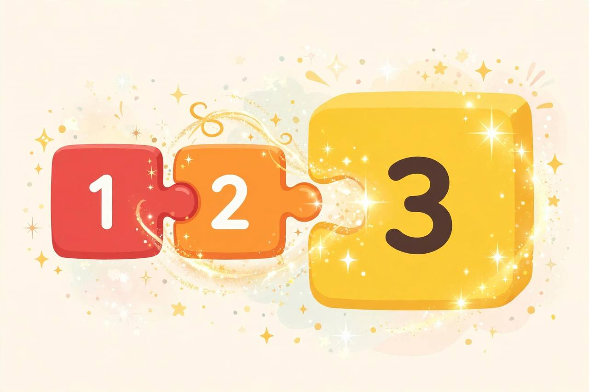
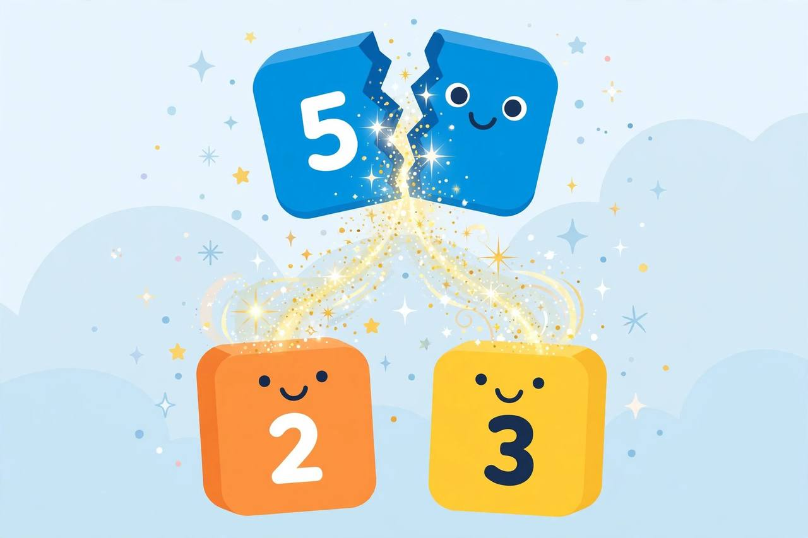

📖 剧情简介
数字们唱歌跳舞：整体可以分成部分，部分合起来就是整体！
The Numberblocks sing and dance: a whole can split into parts, and parts make a whole!
🎭 角色
一号 One、二号 Two、三号 Three、五号 Five
（舞台，灯光亮起 / On stage, the lights come up）
3
Three三号
Listen to my song — it's all about me!
听我的歌——唱的就是我！
3
Three三号
🎵 The whole of me is three!
🎵 完整的我是三！
3
Three三号
🎵 One and two, you see!
🎵 一加二，你看！
（三号分成一号和二号 / Three splits into One and Two）
1
One一号
I'm part of Three!
我是三的一部分！

I'm part of Three!
2
Two二号
And I'm part of Three too!
我也是三的一部分！
3
Three三号
Parts and parts make a whole!
部分加部分就是整体！
5
Five五号
The whole of me is five! Watch!
完整的我是五！看！

The whole of me is five! Watch!
（五号分成二号和三号 / Five splits into Two and Three）
5
Five五号
🎵 Two and three make five — the whole of me!
🎵 二加三等于五——完整的我！
A
All大家
Parts make wholes! Wholes split into parts!
部分组成整体！整体分成部分！